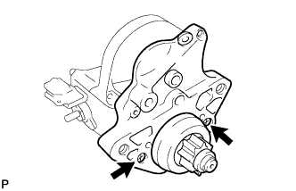
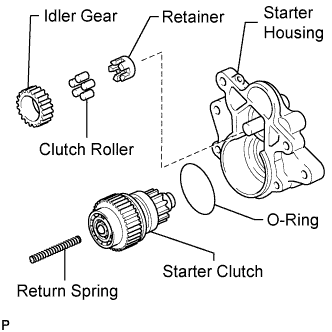
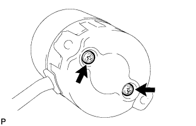

STARTER (for 2.0 kW Type) > DISASSEMBLY |
| 1. REMOVE STARTER DUST PROTECTOR |
Remove the 2 dust protectors.
| 2. REMOVE STARTER YOKE ASSEMBLY |
 |
Remove the nut and disconnect the lead wire from terminal C.
Remove the 2 through bolts.
Pull out the starter yoke with the armature from the magnet starter switch.
Remove the O-ring from the starter yoke.
| 3. REMOVE STARTER CLUTCH SUB-ASSEMBLY |
 |
Remove the 2 screws.
 |
Remove the return spring, idler gear, clutch roller, retainer, O-ring and starter clutch from the starter housing.
 |
Using a magnetic finger, remove the steel ball from the clutch shaft hole.
| 4. REMOVE STARTER BRUSH HOLDER ASSEMBLY |
 |
Remove the 2 screws, 2 O-rings and starter commutator end frame from the starter yoke.
Remove the O-ring from the starter yoke.
 |
Using a screwdriver, hold the spring back and disconnect the brush from the brush holder.
Disconnect the 4 brushes and remove the brush holder.
| 5. REMOVE STARTER ARMATURE ASSEMBLY |
Remove the starter armature from the starter yoke.